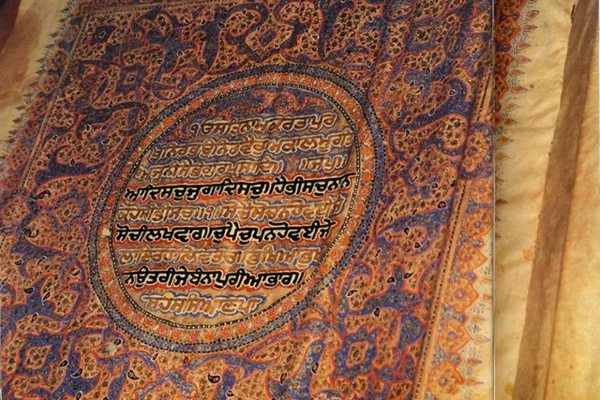

-

Religion, the Sacred Books
The ten books billions live by, each in its own language against the great English translations, with the keystones broken down where the translators split.
-

Philosophy and Science
How to think and what is real, from Plato and Aristotle to Darwin and Deutsch, each argument walked one move at a time, the dissenters kept in.
-

The Inner Life
Meaning, the mind, and how to bear a life: Frankl, the spirituality of imperfection, and the truth about every kind of meditation.
-
Power, Story, and Love
The human dramas: the Art of War on winning without fighting, the Odyssey on getting home, with power, story, and love still to come.
-

Staying Alive
How to take care of the one body you get: muscle, the heart, food, sleep, and the rest, plus how long a human can really live. The actionable science, with the hype stripped off.
-
The Physics That Sounds Made Up
time bends, a single particle goes through two doors at once, and two specks of matter can share one fate across a galaxy. a beginner's field guide to the two theories that broke common sense, relativity and quantum mechanics, one strange idea at a time, with honest analogies and a lot of pictures.
-

The Book With No Blood Test
a field guide to the dsm, psychiatry's catalog of about three hundred disorders, not one of which can be proven by a test. a tour of the conditions you might find yourself in, the wild ones medicine can prove cold instead (huntington's, narcolepsy, the brain on fire), where addiction sits, and how sure you should be that a label is you.
-

Do You Get Used to Everything?
you adapt almost completely to your senses, partly and on a schedule to your feelings, and unreliably to your life. a sourced field guide to habituation: what fades, what never does (commuting, grief, a job you can lose), and the one move you actually get, which is choosing what to get used to.
-

The Far Side of the Body
a field guide to the human body at the ends of its range, from agony and ecstasy to strange sleep and real superpowers. the same gene that means a life on fire, turned the other way, means a life with no pain at all.
-

How Old Are You in Space?
enter your birthday and see your age on every planet, counted in each world's own years, with a countdown to your next birthday on each.
-

The First Year
a calm, exhaustively sourced field guide to a baby's first year: feeding, sleep, health, development, safety, and the parent. every claim cited, every chart on real data, and the places the experts disagree shown honestly.
-

The Living Ocean
a mostly wordless dive through the ocean in three dozen high-resolution photographs, from tide pools and coral reefs to the deep sea, hydrothermal vents, and creatures named only last year.
-

The Brain Behind the Warehouse
behind every "your order has shipped" is a building you have probably never seen and a piece of software that knows where every item inside it is. how that software runs the warehouse and the factory beside it, from the dock door to the assembly line.
-

All In
the work that makes people valuable changed; the way we manage them mostly did not. a field guide to managing professionals, and to getting them all in.
-

Obi Juan Algorithm
a million points of light you fly through in 3D, some deep structures from math, some algorithms you set running and watch work, all computed live.
-

The Optional Body
an interactive descent through the parts of the body you can live without, from a spare foot bone to a heart on a machine.
-

The Old Masters
a small private gallery. Storms and saints, harvest fields and harbour scenes.
-

The Ghost in the Swarm
100,000 particles obey three lines of math on the GPU, while an invisible field steers the swarm through sacred geometry.
-

Sluice
my own 2D mining game. This free v15.89 build is the last public version; development is now private, coming to Steam, Summer 2027.
-

Daylight Globe
a small WebGL globe for the day/night line, daylight hours, and sunrise/set.
-

Rendering Particles Without a Canvas
three physics demos with no canvas, no WebGL, no SVG. The whole renderer is one CSS property on a 1px div.